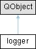

Public Slots |
Signals |
Public Member Functions |
Public Attributes |
Private Attributes |
List of all members
logger Class Reference
Classe per la gestione del logging degli eventi del programma. More...
#include <logger.h>
Inheritance diagram for logger:

Public Slots | |
| void | log (const QString message) |
| log - Scrive un messaggio di log nel file di log con un timestamp | |
| void | exportlog (const QString destinationPath) |
| Esporta il il file di testo di log in una directory specificata. | |
Signals | |
| void | printLogMessage (const QString &message) |
Public Member Functions | |
| logger (const QString logDirPath) | |
| void | stop () |
Public Attributes | |
| bool | logFileCreated |
Private Attributes | |
| QFile * | logFile |
| QString | logFilePath |
Detailed Description
Classe per la gestione del logging degli eventi del programma.
Member Function Documentation
◆ exportlog
|
slot |
Esporta il il file di testo di log in una directory specificata.
- Parameters
-
destinationPath - il percorso alla directory di destinazione di esportazione del file di log
- Returns
- void
Questa funzione copia il file di log esistente nella directory di destinazione specificata. Se il file di log non esiste, emette un segnale di errore. Se la copia ha successo, emette un messaggio di successo.*
◆ log
|
slot |
log - Scrive un messaggio di log nel file di log con un timestamp
- Parameters
-
message - il messaggio da scrivere nel file di log
- Returns
- void
Questa funzione apre il file di log in modalità append, scrive il messaggio con un timestamp e poi chiude il file. Se il file non può essere aperto, emette un segnale di errore.
The documentation for this class was generated from the following files:
- C:/Users/davided/source/repos/MultiTargetUpdaterv2/MultiTargetUpdaterv2/logger.h
- C:/Users/davided/source/repos/MultiTargetUpdaterv2/MultiTargetUpdaterv2/logger.cpp
Generated by